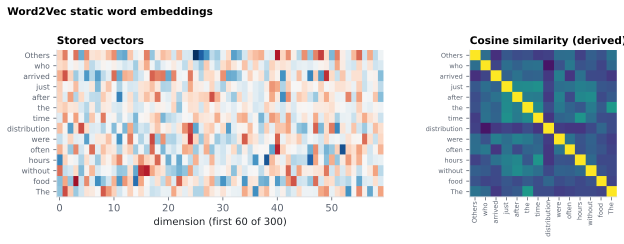

On this page
6.1.14Word2Vec static word embeddings
A single 300-dimensional vector per word, looked up from a pretrained static embedding table (Google News 100B-word corpus).
6.1.14.1What it is
A single 300-dimensional vector per word, looked up from a pretrained
static embedding table (Google News 100B-word corpus). Output shape:
(n_words, 300). The same surface word always gets the same vector
regardless of context — this is the static (non-contextual)
counterpart to BERT.
6.1.14.2See it

6.1.14.3In your output
| variable | size | MATLAB class |
|---|---|---|
embeddings | 26 × 300 | single |
tokens | 1 × 26 | cell |
word_id | 1 × 26 | int64 |
sentence_id | 1 × 26 | int64 |
is_valid | 1 × 26 | uint8 |
6.1.14.4MATLAB
S = load('word/LJ002-0321_word2vec.mat');
whos('-file', 'word/LJ002-0321_word2vec.mat') % variables, sizes, classes
% S.embeddings is 26 x 300 (single) in this example
E = S.embeddings(S.is_valid == 1, :); % words x dimensions
words = S.tokens(S.is_valid == 1); % cell array of the matching words
En = E ./ vecnorm(E, 2, 2); % unit length
imagesc(En * En'); axis square; colorbar % cosine similarity between words
xticks(1:numel(words)); xticklabels(words); yticks(1:numel(words)); yticklabels(words)
6.1.14.5How it's computed
Word2Vec vectors are learned by skip-gram with negative sampling
(Mikolov 2013a): given a center word, predict its context words,
optimizing a low-dimensional embedding so that words appearing in
similar contexts end up with similar vectors. The Google News 300d
model ships these as a flat lookup table — word → ℝ³⁰⁰ — with ~3M
vocabulary entries.
The semantic-similarity metric typically used downstream is cosine:
sim(w₁, w₂) = (v(w₁) · v(w₂)) / (‖v(w₁)‖ · ‖v(w₂)‖)
6.1.14.6Example
from gensim.models import KeyedVectors
import numpy as np
model = KeyedVectors.load_word2vec_format(
"data/hf_cache/word2vec/GoogleNews-vectors-negative300.bin", binary=True
)
words = ["The", "cat", "sat"]
mat = np.zeros((len(words), 300), dtype=np.float32)
for i, tok in enumerate(words):
if tok in model: mat[i] = model[tok]
elif tok.lower() in model: mat[i] = model[tok.lower()]
# else: leave zero (OOV)
6.1.14.7In the code
Source: sensi/extractors/word2vec_embed.py.
What the code does (verified against the source):
- Loads the pretrained Google News 300d vectors via gensim's
KeyedVectors.load_word2vec_format(..., binary=True). - Default lookup path:
data/hf_cache/word2vec/GoogleNews-vectors-negative300.bin. - If the local file is missing, the model is auto-downloaded via
gensim.downloader.load("word2vec-google-news-300")(~1.7 GB, one time, cached in the project'sdata/gensim_data/folder; an existingGENSIM_DATA_DIRenvironment variable takes precedence). - Iterates over the word-level token column and, for each token:
a. Returns the vector if the exact token is in vocabulary.
b. Otherwise tries the lowercase form (
token.lower()). c. Otherwise leaves the row as a zero vector. - PUNCT tokens are forced to a zero vector (regardless of vocab membership) so punctuation is handled identically to BERT.
- The extractor returns
(matrix, is_valid), whereis_valid[i]is True iff rowiis a non-PUNCT token found in vocab (exact or lowercase fallback). PUNCT and OOV rows are zero withis_valid=False. Output isfloat32, shape(n_words, 300), row-aligned with the word-level CSV.
Output .mat fields — flat top-level variables (not a nested struct),
so embeddings stays backward-compatible:
| Field | Shape | Meaning |
|---|---|---|
embeddings |
(n_words, 300) float32 |
the vectors, row-aligned to the word CSV |
tokens |
{n_words} cellstr |
surface token per row |
word_id |
(n_words,) int |
the word CSV token_id (global token index) |
sentence_id |
(n_words,) int |
spaCy sentence id |
is_valid |
(n_words,) logical |
False for PUNCT / OOV (zero rows) |
is_valid=False here mixes two cases — PUNCT and out-of-vocabulary
content words (e.g. proper nouns absent from Google News). This is not
identical to BERT's is_valid, where content words
are essentially always embedded, so the two masks can disagree on the same
OOV word; an analyst comparing valid-word counts across the two models
should account for that.
Why:
- Google News 300d is a well widely cited static-embedding baseline in the literature, so emitting it gives downstream analysts a feature that's directly comparable across studies.
- Lowercase fallback before zero-fill — the Google News vocabulary keeps
capitalised and lowercase forms as separate entries (checked against the
model file:
apple/Apple,the/The,paris/Parisare all present as distinct words), so a capitalised token with no entry of its own would otherwise get a zero vector even when its common lowercase form exists. The fallback recovers those without silently lowercasing all rows. - OOV (Out of Vocabulary) → zero vector
Alternatives that were not chosen (for reader context):
| Approach | Why we didn't pick it |
|---|---|
| GloVe 300d (Common Crawl) | Comparable quality; Google News is more widely cited as the EEG-study baseline. |
| FastText (subword-aware) | Better OOV coverage but the static-embedding role is filled by Google News; FastText's value is mostly for morphologically rich languages. |
| BERT layer-0 (embedding layer) as the "static" embedding | Cheap to compute but it's BERT's WordPiece vocabulary, not whole-word — comparability across studies is worse. |
| Train custom vectors on the stimulus corpus | Tiny corpus → noisy vectors. The whole point of using pretrained vectors is to import the statistics of a huge corpus. |
6.1.14.8Library
import gensim.downloader as gensim_dl
model = gensim_dl.load("word2vec-google-news-300") # ~1.7 GB on first run
vector = model["bank"] # numpy array, shape (300,)
sim = model.similarity("bank", "river") # cosine, in [-1, 1]
For an offline / pinned setup, drop the .bin at
data/hf_cache/word2vec/GoogleNews-vectors-negative300.bin and the
extractor uses it directly without contacting the network.
6.1.14.9EEG rationale
Static distributional vectors capture corpus-level semantic similarity between words, and similarity in this space is the operational definition behind many EEG/MEG studies of lexical-semantic processing — the N400, in particular, is sensitive to a wide range of context-dependent linguistic manipulations including semantic congruity and predictability (Kutas 2011 review). Word2Vec is a useful baseline against contextual embeddings: comparative benchmarks of dozens of language models against neural data show that contextual transformer models predict more variance than static embeddings (Schrimpf 2021), and per-layer analyses dissociate what context length and attention add to brain-prediction quality (Toneva 2019).
6.1.14.10Papers
Model:
- Mikolov 2013a Mikolov, Sutskever, Chen, Corrado, Dean. Distributed Representations of Words and Phrases and their Compositionality. NeurIPS 2013. arXiv:1310.4546 — skip-gram with negative sampling; the algorithm behind the Google News 300d vectors.
- Mikolov 2013b Mikolov, Chen, Corrado, Dean. Efficient Estimation of Word Representations in Vector Space. ICLR Workshop 2013. arXiv:1301.3781 — original Word2Vec paper.
Use in language-EEG / brain studies:
- Kutas 2011 Kutas & Federmeier. Thirty years and counting: Finding meaning in the N400 component of the event-related brain potential (ERP). Annual Review of Psychology. doi:10.1146/annurev.psych.093008.131123 — N400 review; semantic relatedness as the canonical N400 modulator.
- Toneva 2019 Toneva & Wehbe. Interpreting and improving natural-language processing (in machines) with natural language-processing (in the brain). NeurIPS 2019. arXiv:1905.11833 — examines word/sequence embeddings from ELMo, USE, BERT, and Transformer-XL as brain-prediction features, dissociating contributions of layer depth, context length, and attention.
- Schrimpf 2021 Schrimpf, Blank, Tuckute, Kauf, Hosseini, Kanwisher, Tenenbaum, Fedorenko. The neural architecture of language: Integrative modeling converges on predictive processing. PNAS 118(45), e2105646118. doi:10.1073/pnas.2105646118 — benchmarks dozens of language models (including static and transformer) against fMRI and ECoG; transformer models predict ~100% of explainable variance in neural responses to sentences.